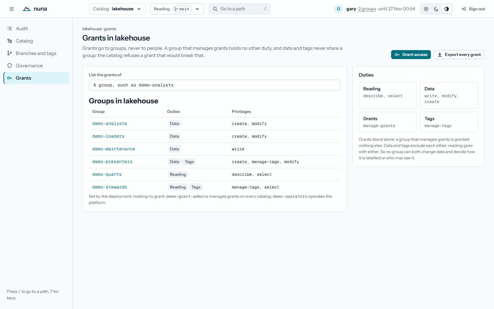

The Grants page
The Grants page answers, for grant admins, which groups hold what in a catalog, and lets them grant, revoke and export. Before you select Grant, it says what the grant will give, that it is already held, or why the catalog would refuse it.

Who sees it
The rail shows Grants only when your groups manage grants in the catalog. Every grant route needs manage-grants; grant admins hold it on every catalog. Without it, a link here shows "Grants in catalog are open to those who manage its grants." Everyone else sees their own groups' grants on each object's Access tab.
The grants
The title is Grants in catalog. "Grants go to groups, never to people. A group that manages grants holds no other duty, and data and tags never share a group: the catalog refuses a grant that would break that." The buttons are Grant access and Export every grant.
List the grants of takes a group name, such as trading-analysts, and keeps it in the page's address.
- With no group named, Groups lists each group that holds a grant in the catalog, with its Duties (Reading, Data, Grants, Tags) and privileges. It also names the groups set by the deployment, which hold no grant: those that manage grants on every catalog and those that operate the platform. Empty: "No group holds a grant in catalog yet."
- With a group named, Grants to group lists its Privilege, On (a path and type, or the whole catalog), Granted and Revoke. Empty: "group holds no grant in catalog."
Duties sets out the four duties and which privileges belong to each: Reading (describe, select), Data (write, modify, create), Grants (manage-grants) and Tags (manage-tags). "Grants stand alone: a group that manages grants is granted nothing else. Data and tags exclude each other; reading goes with either. So no group can both change data and decide how it is labelled or who may see it."
Grant access
Grant access opens Grant access in catalog here, or Grant access on name from an object's Access tab.
Pick the group.
Pick one of the groups that already hold a grant, or type a name. The catalog cannot list your directory's groups, so a new name is accepted as typed: "group holds no grant in catalog yet. The catalog can't list your directory's groups, so check the spelling."
Pick the access.
"From See it to Change it, each includes those above it."
In the console Privilege Offered on See it describeeverything Read its data selecteverything Read and write rows writenot views Change it (schema, properties, maintenance) modifyeverything; on a view Change it (definition, properties) Create tables, views and namespaces in it createthe catalog and namespaces Set labels and holds manage-tagseverything Manage grants manage-grantseverything Pick where.
On this page, search with Find a namespace, table or view, or select Use the whole catalog. From an Access tab, it is that object.
Read the line beneath, and select Grant.
The catalog checks the grant as you choose. Grant is enabled only when it would be admitted. The answer is Granted privilege on name to group. "It is in the audit trail."
| Message | Meaning |
|---|---|
| group will … | The grant is admitted. If the group already has it through a broader grant: "A grant here stands if that one is revoked." |
| Already held: privilege on name, granted by who … | Nothing to do. |
| You belong to group. No one grants to their own group: ask another grant admin. | The self-grant rule. |
| group operates the platform, so it holds no grant. | Separation of duties. |
| group manages grants on every catalog, so it holds no other grant. | Separation of duties. |
| group manages grants in catalog, so it holds nothing else. | Separation of duties. |
| group already holds other access in catalog, and a group that manages grants holds nothing else. | Separation of duties. |
| group sets labels and holds in catalog, and data and tags never share a group. | Separation of duties. |
| group changes data in catalog, and data and tags never share a group. | Separation of duties. |
| privilege means nothing on a kind. | Such as create on a table. |
Revoke
Revoke opens Revoke privilege from group: "group loses privilege on type path. The grant and its revocation stay in the audit trail." Select Revoke. A revoke removes the grant where it was made; a broader grant above still applies.
Export every grant
Export every grant opens Every grant in catalog, saying who exported how many and when; "The export is audited." Select Download CSV (columns group, privilege, type, namespace, name, branch, granted-by, granted-at), Download JSON or Copy the JSON.
From the command line
| In the console | Endpoint |
|---|---|
| Groups | GET /management/v1/catalogs/{catalog}/grants/groups (Grants) |
| Grants to a group | GET …/grants?group={group} (Grants) |
| The line beneath, while choosing | POST …/grants/preview (Grants) |
| Grant | POST …/grants (Grants) |
| Revoke | POST …/grants/revoke (Grants) |
| Export every grant | GET …/grants/export (Grants) |
See also
- Grant and revoke access: the task, from the console and with curl.
- Privileges: what each privilege allows.
- Authorization: separation of duties and the self-grant rule.
- Grants: the API.
How this page was checked
Written from the console's governance.js, grant.js and panels.js, and from GrantRoutes.java, checked against commit b3e8582f on 2026-11-26.
The console was not driven in a browser.